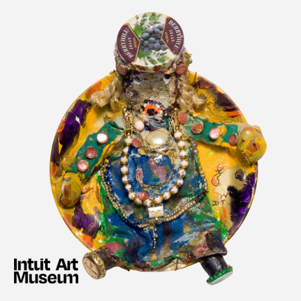

Community Day: IAM nourished
Discover together through engaging activities for all ages as you explore the Museum, learn about the art on view, and make your own artwork with Chicago artists. Inspired by Catalyst: Im/migration and Self-taught Art in Chicago artists Albina Felski, Thomas Kong and Derek Webster, explore art made from and about food!
Featured drop-in art activities include cardboard cake-slice sculptures based on the work of Albina Felski, food-packaging collages inspired by Thomas Kong and paper-plate sculptures influenced by Derek Webster.
Image credit: Derek Webster, American, born Puerto Castilla (Republic of Honduras), raised in Belize City (British Honduras, now Belize), 1934–2009. Untitled (Woman plate #3), 2003. American porcelain plate with applied paint, costume jewelry, beads, fabric, rocks, wood, bottle caps and buttons, 11 1/2 x 8 1/2 x 2 7/8 in. Collection of the Longwood Center for the Visual Arts, gift of William and Ann Oppenhimer, 2009.15.48